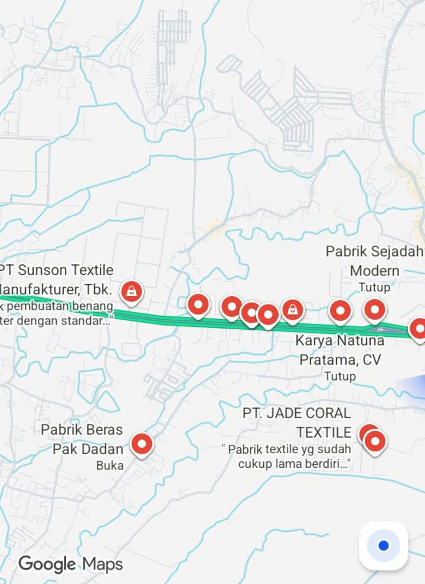

Kenapa Pengusaha Perlu Memilih Kecamatan Rancaekek untuk Membangun Pabrik dan Toko?

Menentukan lokasi merupakan salah satu keputusan penting ketika seseorang ingin membangun usaha, membuka toko, mendirikan gudang, maupun mengembangkan pabrik. Lokasi yang tepat dapat membantu perusahaan menjangkau konsumen, memperoleh tenaga kerja, mengatur distribusi barang, dan memperluas jaringan bisnis.
Salah satu wilayah yang menarik untuk dipertimbangkan di Kabupaten Bandung, Jawa Barat, adalah Kecamatan Rancaekek. Wilayah ini memiliki aktivitas industri, kawasan permukiman, perdagangan, serta akses transportasi yang menghubungkan sejumlah daerah di Bandung Timur dan sekitarnya.
Lalu, apa saja alasan Rancaekek layak dipertimbangkan oleh pengusaha dan investor? Berikut pembahasannya dalam format tanya jawab.
Butuh Layanan Pengiriman untuk Bisnis?
Usaha, toko, pabrik, maupun distributor membutuhkan layanan pengiriman untuk mendukung aktivitas operasional dan distribusi barang.
💬 Chat WhatsApp 0851-8309-04861. Mengapa Rancaekek dianggap sebagai lokasi strategis untuk membangun usaha?
Rancaekek berada di bagian timur Kabupaten Bandung dan memiliki posisi yang menghubungkan Bandung dengan wilayah Sumedang serta daerah lainnya. Kecamatan ini juga berada di jalur pergerakan masyarakat dan aktivitas ekonomi Bandung Timur.
Menurut informasi pada situs resmi Kecamatan Rancaekek, wilayah ini berada tidak jauh dari Tol Cileunyi dan dilintasi jalur jalan negara yang menghubungkan Bandung dengan Garut, Tasikmalaya, Pangandaran, hingga wilayah Jawa Tengah.
Posisi tersebut membuat Rancaekek menarik untuk dipelajari oleh pengusaha yang membutuhkan akses antardaerah, baik untuk kegiatan perdagangan, produksi, maupun distribusi.
2. Apakah Rancaekek memiliki potensi pasar yang besar untuk membuka toko?
Ya, salah satu pertimbangannya adalah jumlah penduduk yang cukup besar. Berdasarkan tabel statistik BPS Kabupaten Bandung tahun 2026, jumlah penduduk Kecamatan Rancaekek tercatat sekitar 193,7 ribu jiwa.
Jumlah penduduk tersebut dapat menjadi salah satu indikator untuk mempelajari potensi pasar lokal. Aktivitas masyarakat, kebutuhan rumah tangga, pekerja industri, dan perkembangan permukiman dapat menciptakan peluang bagi berbagai jenis usaha.
Beberapa jenis usaha yang dapat dipertimbangkan antara lain:
- Toko kebutuhan sehari-hari dan minimarket.
- Toko bahan bangunan dan perlengkapan rumah.
- Toko pakaian, tekstil, dan perlengkapan konveksi.
- Usaha kuliner dan pusat makanan.
- Distributor barang dan toko grosir.
- Usaha jasa, ekspedisi, dan logistik.
Meski demikian, jumlah penduduk bukan jaminan keberhasilan bisnis. Pengusaha tetap perlu mempelajari daya beli, kompetitor, lokasi toko, dan kebutuhan konsumen sebelum memutuskan berinvestasi.
3. Apakah Rancaekek cocok untuk membangun pabrik dan kawasan produksi?
Rancaekek telah dikenal sebagai salah satu wilayah dengan aktivitas industri manufaktur, terutama industri tekstil. Keberadaan perusahaan dan aktivitas produksi di wilayah ini menjadi salah satu bagian dari ekosistem ekonomi lokal.
Bagi pengusaha yang bergerak dalam bidang manufaktur, kondisi tersebut dapat membuka peluang untuk membangun hubungan bisnis dengan pemasok, penyedia bahan baku, perusahaan pendukung, distributor, hingga penyedia jasa transportasi.
Namun, pembangunan pabrik tidak bisa hanya didasarkan pada keberadaan industri di sekitarnya. Investor harus memastikan bahwa lokasi yang dipilih memang diperbolehkan untuk kegiatan industri sesuai tata ruang dan perizinan yang berlaku.
4. Bagaimana akses transportasi Rancaekek untuk kegiatan bisnis?
Transportasi merupakan faktor penting bagi perusahaan yang membutuhkan pengiriman bahan baku dan distribusi produk. Rancaekek memiliki beberapa akses transportasi yang patut menjadi pertimbangan.
- Jalur jalan raya: Rancaekek berada di koridor jalan yang menghubungkan Bandung dengan Cicalengka dan wilayah Garut.
- Tol Cileunyi: Kedekatannya dengan akses Tol Cileunyi dapat menjadi pertimbangan untuk perjalanan menuju jaringan jalan tol.
- Kereta api: Stasiun Rancaekek melayani perjalanan kereta api penumpang pada jalur Bandung menuju wilayah timur Pulau Jawa.
- Transportasi regional: Posisi Rancaekek memudahkan hubungan aktivitas ekonomi dengan kawasan Bandung Timur dan Jatinangor.
Pengusaha tetap perlu memeriksa kondisi jalan, kemacetan, pembatasan kendaraan berat, dan waktu tempuh aktual sebelum menentukan lokasi pabrik atau gudang.
5. Apakah Rancaekek memiliki peluang untuk usaha yang berkaitan dengan industri tekstil dan konveksi?
Rancaekek memiliki sejarah perkembangan industri tekstil dan manufaktur. Hal ini memberikan peluang bagi usaha yang menyediakan produk maupun jasa pendukung kegiatan industri.
Contoh peluang bisnis yang dapat dipelajari antara lain:
- Supplier kain, benang, dan bahan baku tekstil.
- Distributor perlengkapan produksi dan mesin.
- Usaha konveksi dan pakaian jadi.
- Jasa pengemasan dan penyimpanan barang.
- Transportasi dan pengiriman produk industri.
- Penyedia perlengkapan keselamatan kerja.
Pengusaha yang mampu membangun hubungan dengan perusahaan dan pelaku industri di sekitar Rancaekek berpeluang mendapatkan jaringan pelanggan bisnis yang lebih luas.
6. Apakah Rancaekek cocok untuk membangun gudang dan pusat distribusi?
Rancaekek dapat dipertimbangkan sebagai salah satu alternatif lokasi gudang dan pusat distribusi, khususnya bagi perusahaan yang melayani pasar Bandung Timur, Sumedang, Cicalengka, dan wilayah sekitarnya.
Keberadaan jalur transportasi regional serta aktivitas industri dan perdagangan menjadi faktor yang dapat mendukung kebutuhan distribusi.
Akan tetapi, pemilihan lokasi gudang harus memperhatikan beberapa hal:
- Akses kendaraan pengangkut barang.
- Ketersediaan lahan dan luas bangunan.
- Kondisi jalan untuk kendaraan operasional.
- Risiko banjir dan kondisi lingkungan.
- Jarak terhadap pemasok dan pelanggan.
- Kesesuaian tata ruang dan izin penggunaan bangunan.
7. Apakah ketersediaan tenaga kerja menjadi keunggulan Rancaekek?
Jumlah penduduk yang besar dan keberadaan aktivitas industri dapat menjadi modal awal bagi perusahaan untuk mempelajari potensi tenaga kerja di Rancaekek dan daerah sekitarnya.
Selain itu, wilayah sekitar seperti Cicalengka, Cileunyi, dan Jatinangor dapat menjadi bagian dari pertimbangan perusahaan ketika melakukan perekrutan tenaga kerja.
Namun, ketersediaan tenaga kerja harus tetap disesuaikan dengan kebutuhan perusahaan, seperti keterampilan teknis, pengalaman, tingkat pendidikan, serta standar upah yang berlaku.
8. Apakah membuka toko di Rancaekek lebih menguntungkan dibandingkan daerah lain?
Tidak selalu. Keuntungan sebuah toko dipengaruhi oleh jenis produk, harga sewa atau pembelian tempat, jumlah pesaing, daya beli masyarakat, serta kemudahan akses konsumen.
Rancaekek memiliki beberapa karakteristik yang menarik untuk dianalisis, seperti aktivitas industri, permukiman, perdagangan, dan pergerakan masyarakat. Namun, pengusaha tetap perlu melakukan survei langsung untuk menemukan lokasi yang paling sesuai.
Sebagai contoh, toko kebutuhan pekerja mungkin lebih cocok berada di sekitar permukiman dan jalur aktivitas industri. Sementara itu, toko bahan bangunan atau distributor mungkin lebih membutuhkan lahan luas dan akses kendaraan pengangkut.
9. Apa yang harus diperiksa sebelum membangun pabrik atau toko di Rancaekek?
Sebelum membeli tanah, menyewa bangunan, atau memulai pembangunan, calon investor sebaiknya melakukan pemeriksaan secara menyeluruh.
- Periksa tata ruang: Pastikan peruntukan lahan sesuai dengan rencana kegiatan usaha.
- Periksa legalitas tanah: Pastikan dokumen kepemilikan dan status tanah jelas.
- Periksa perizinan: Pelajari persyaratan perizinan berusaha melalui OSS dan instansi terkait.
- Survei akses jalan: Pastikan kendaraan operasional dapat keluar masuk dengan aman.
- Analisis pasar: Pelajari kebutuhan konsumen dan tingkat persaingan.
- Hitung biaya investasi: Pertimbangkan harga tanah, pembangunan, tenaga kerja, listrik, air, dan operasional.
- Periksa kondisi lingkungan: Perhatikan drainase, risiko banjir, pengelolaan limbah, serta dampak terhadap masyarakat sekitar.
10. Jadi, apakah Kecamatan Rancaekek layak menjadi pilihan untuk investasi bisnis?
Rancaekek merupakan salah satu wilayah di Kabupaten Bandung yang layak masuk dalam daftar pertimbangan pengusaha dan investor. Jumlah penduduk yang besar, perkembangan industri, aktivitas perdagangan, serta akses transportasi regional menjadi beberapa faktor pendukungnya.
Wilayah ini dapat dipelajari untuk berbagai jenis usaha, mulai dari toko ritel, distributor, konveksi, gudang, usaha logistik, hingga kegiatan manufaktur yang sesuai dengan peruntukan ruang.
Keputusan investasi terbaik tetap harus didasarkan pada survei lokasi, analisis pasar, perhitungan biaya, dan pemeriksaan legalitas. Dengan perencanaan yang matang, Rancaekek berpotensi menjadi salah satu lokasi pengembangan bisnis yang menarik di kawasan Bandung Timur.
📍 Lokasi Lion Parcel Bandung POS101 Nanjungmekar
Jl. Raya Barat Cicalengka RT 1 RW 1, Nanjung Mekar, Rancaekek, Kabupaten Bandung, Jawa Barat.
Kesimpulan
Memilih lokasi usaha bukan hanya tentang mencari tanah atau bangunan yang murah. Pengusaha perlu mempertimbangkan potensi pasar, infrastruktur, tenaga kerja, akses distribusi, dan perkembangan ekonomi wilayah.
Kecamatan Rancaekek memiliki sejumlah potensi yang menarik untuk dikaji sebagai lokasi pengembangan bisnis di Kabupaten Bandung. Dengan analisis yang tepat, wilayah ini dapat menjadi pilihan bagi pengusaha yang ingin membangun toko, pabrik, gudang, maupun usaha pendukung industri.
Nama Agen: Lion Parcel Bandung POS101 Nanjungmekar Rancaekek
Jam Operasional: Senin–Minggu, 08.00–20.00 WIB
Alamat: Jl. Raya Barat Cicalengka RT 1 RW 1, Nanjung Mekar, Rancaekek, Kabupaten Bandung
WhatsApp: 0851-8309-0486